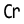

 Crown
Component Index > ASTools > Surface > C
Adds curvature to a surface
Inputs
| Name | ID | Description | Type |
|---|---|---|---|
| Surface | S | Surface to add curvature | Surface |
| delta | d | Value of change | Number |
| variant | v | Variation of the crown \n0 -> only U \n1 -> only V \n2 -> U & V edge stays zero \n3 -> U & V interpolated | Integer |
| invert | b | bool -> Invert direction of the crown? | Boolean |
Outputs
| Name | ID | Description | Type |
|---|---|---|---|
| Surface | S | Crown | Surface |
Copyright © 2016 Robert McNeel & Associates.